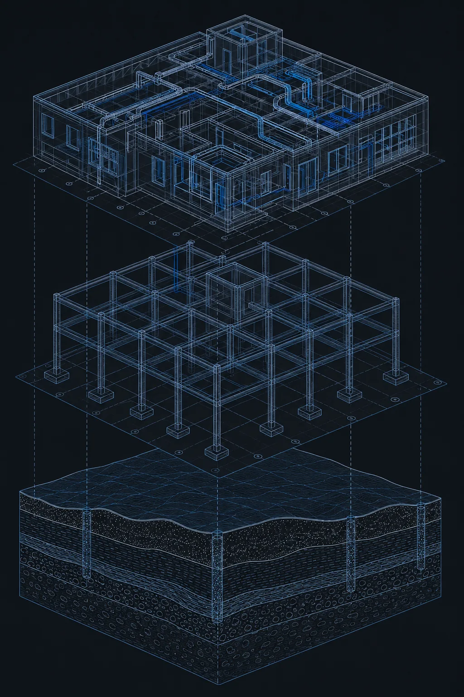

Civion BD
Civion BD is a structural, geotechnical, and BIM engineering consultancy based in Dhaka, Bangladesh. Founded by two BUET-trained civil engineers, the firm delivers integrated engineering services — structural design, geotechnical analysis, BIM coordination, and visualization — under a single technical team rather than as siloed sub-consultants.

Why Civion Exists
Most small-to-mid-size consultancies specialize narrowly — a structural firm does structural work, a BIM firm does BIM. Clients assembling a full project have to coordinate all three themselves, absorbing the risk when outputs don't agree. Civion BD keeps structural, geotechnical, and BIM expertise inside one coordinated team, working from shared models and a shared engineering standard from day one. This is the operating structure of the company, not a marketing position.
How We Think About Engineering
Safety
No design output leaves Civion without being checked against the governing code and against physical intuition. Software results are never accepted uncritically.
Practicality
Designs are evaluated for how they will actually be built, inspected, and maintained on a real site with real constraints.
Precision
Boundary conditions, load paths, and material assumptions are treated as first-class decisions, not defaults left unexamined.
Constructability
A design that cannot be reasonably built, detailed, and inspected is not a finished design — constructability review is part of the process.
Sustainability
Material efficiency and structural optimization are pursued as engineering discipline — an over-designed structure is treated as a design flaw, not a safety margin.
What We Hold To
Technical Integrity
The engineering answer is never adjusted to please a client, meet a deadline, or match a budget.
Honesty
Uncertainty is stated, not hidden. Assumptions are documented. Missing data is flagged, not assumed away.
Learning
Continuous technical learning is treated as a job requirement, not a perk.
Collaboration
Structural, geotechnical, and BIM disciplines talk to each other constantly during a project.
What Makes Us Different
- checkFounded by two BUET civil engineers — same cohort, complementary disciplines
- checkEnd-to-end capability: geotechnical investigation through structural design to BIM coordination and visualization
- checkCode-versatile: BNBC 2020, ASCE 7-22, ACI 318, ISO 19650, Eurocode
- checkISO 19650-native BIM workflows — no retro-fitting, no compatibility issues
- checkStructural + geotechnical under one roof eliminates the coordination gap between disciplines
See the Engineering in Practice
Review delivered projects across structural, geotechnical, and BIM disciplines.
View Our Work arrow_forward